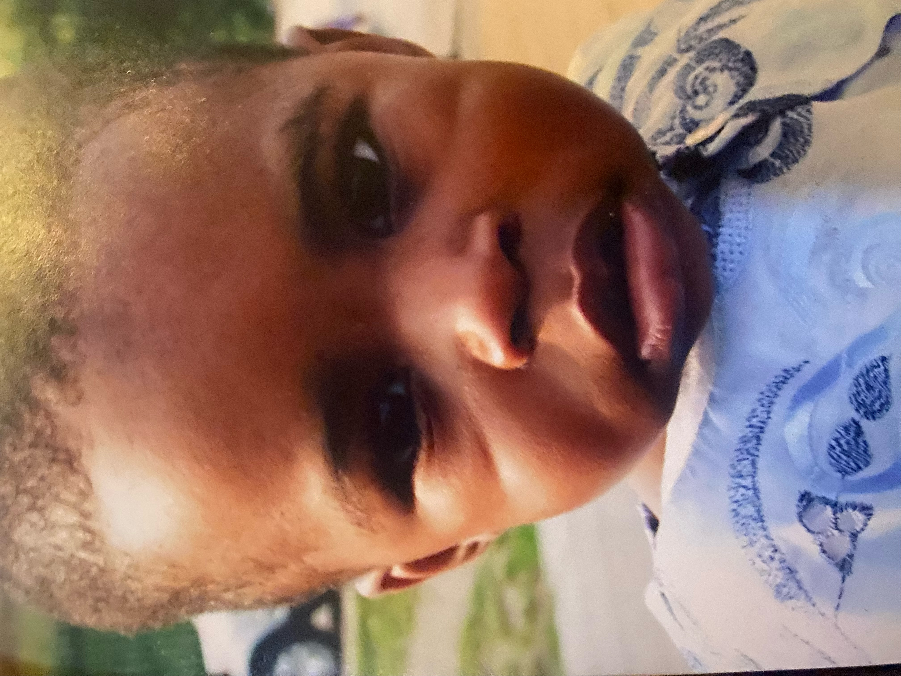

 Hello! My name is Malachi, and I’m a young aspiring developer.
My interests in IT and Computer Science stemmed from a young age. Growing up in a household with 2 parents who are both technologically gifted and have quite 'digital' jobs, I look up to them, and have always been fascinated in electronics. In addition, as I’ve grown up playing a lot of digital games such as Fifa, I’ve always been interested in the science behind the games, and how they were created, or developed.
My interests in IT continued throughout secondary school as I picked the subject as one of my optional subjects (alongside PE and History) for my GCSEs. Below is what I scored in each of my subjects:
| Subject | Grade achieved |
|---|---|
| Information Technologies | Distinction 2 |
| Combined Science | 6 |
| English Language | 8 |
| English Literature | 7 |
| History | 6 |
| Mathematics | 7 |
| Physical Education | 6 |
| Spanish | 5 |
I also sat English and Spanish speaking exams in which I attained a Merit in English (on a pass/merit/distinction scale) and a distinction in Spanish, on the same basis.
Currently, I am studying for my A-Levels, and am due to sit exams in History, Maths and IT in May 2023.
Besides education, I enjoy exploring new things, watching different sports, and as previously mentioned, playing games (and I'm very good at games). I also have recently started to enjoy coding. My first experience in coding was during the summer holiday of 2022. I attended a 20 hour, 5 day course with The Ladder Back Down. The instructor taught me HTML, CSS and JavaScript skills.
I have not built on my JavaScript skills as of now, but have continued learning HTML and CSS through firstly using YouTube tutorials for beginners, and also making a practice website with the help of one of my brothers and my uncle, who has years of experience. With skills aquired from all of these sources, I have started to build my own independent website.
Whilst maintaining this website, I am also working towards builing a more advanced website, including the use of Bootstrap. This, alongside all the other websites I have built/am building, can be viewed on My Github or Codepen, as presented at the top of the screen.
In addition to participating in the 5 day course with Ladder Back Down, during the 2022 summer holidays, I also did my work experience at Schroders, an asset management company. I worked across 2 branches, one in Horsham (which was a very long journey on a very busy train) and the other on London Wall Street.
I spent time within different roles at the company, including business roles as well as IT development roles. This was an experience unique to any other, and I enjoyed meeting different people and teams and being introduced to varying parts of their roles, verbally and with practical demonstrations.
Meeting various staff was very benefitial, as I met a few people who were on apprenticeship schemes, and some who had worked their way up from apprenticeship schemes, and they were able to give me a sense of direction in where to start from.
Not only did this work experience help me increase my knowledge, it also helped me get used to simple work principles such as punctuality, my attendance (which is 100% in school to this day) and generally the values of working within a coorporate organisation.